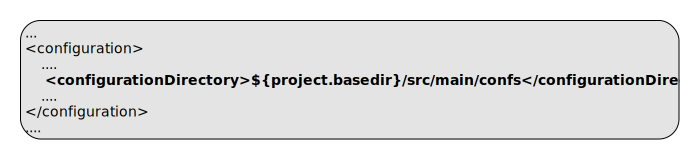
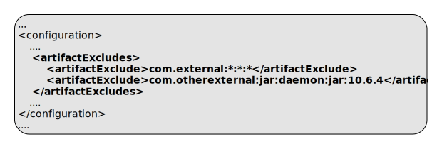

ep:package-liveview-fragment
Full name:
com.tibco.ep:ep-maven-plugin:1.6.0-SNAPSHOT:package-liveview-fragment
Description:
Build a LiveView fragment
The packaging rules are as follows :-
- A mainifest file is created at /META-INF/MANIFEST.MF containing
:-
- Archiver-Version: Plexus Archiver
- Built-By: build user
- Build-Jdk: jdk version
- Package-Title: project groupId and name
- Package-Version: project version and buildNumber
- Package-Vendor: project organization name (if set)
- pom.xml copied to /META-INF/maven/groupId/artifactId/pom.xml
- pom.properties created in /META-INF/maven/groupId/artifactId/pom.properties
- The project's files are copied into /
- The project's java classes and jar dependencies are copied into /java-resources
- The project's resources files are copied into /
The plexus archiver is used to create the archive via the maven assembly plugin.
Native archives (nar) are included - in this case a mapping is included from the nar AOL values (http://maven-nar.github.io/aol.html) to internal values.
The generated filename is <artifactId>-<version>-ep-liveview-fragment.zip
Attributes:
- Requires a Maven project to be executed.
- Requires dependency resolution of artifacts in scope: runtime.
- Binds by default to the lifecycle phase: package.
Required Parameters
| Name | Type | Since | Description |
|---|---|---|---|
| <configurationDirectory> | File | 1.0.0 |
Additional resources directory for HOCON configurations This is added to the list of resource directories Example use in pom.xml: Default value is: ${project.basedir}/src/main/configurations. |
| <liveviewDirectory> | File | 1.0.0 |
Liveview source directory Example use in pom.xml: 
Example use on commandline:  Default value is: ${project.basedir}/src/main/liveview. User property is: liveviewDirectory. |
| <testConfigurationDirectory> | File | 1.0.0 |
Additional resources directory for test HOCON configurations This is added to the list of test resource directories Example use in pom.xml:  Default value is: ${project.basedir}/src/test/configurations. |
Optional Parameters
| Name | Type | Since | Description |
|---|---|---|---|
| <artifactExcludes> | String[] | 1.0.0 |
List of artifact names to exclude from the zip archive. Format of each artifact is groupId:artifactId:type[:classifier]:version. Wildcards are supported. Example use in pom.xml:  |
| <eventflowDirectories> | File[] | 1.0.0 |
Eventflow source directories If no eventflowDirectories is specified, a single directory of ${project.basedir}/src/main/eventflow is used. Example use in pom.xml: 
Example use on commandline:  User property is: eventflowDirectories. |
| <ignoreLeaks> | String[] | 1.3.0 |
List of class names to ignore in leak detection. This is processed to a CSV value to include in unit testing and in jar manifest file. Example use in pom.xml:  |
| <productHome> | File | 1.0.0 |
Product home location. This path is resolved in the following way :
Example use in pom.xml: 
Example use on commandline:  User property is: com.tibco.ep.ep-maven.product. |
Parameter Details
<artifactExcludes>
List of artifact names to exclude from the zip archive.
Format of each artifact is groupId:artifactId:type[:classifier]:version. Wildcards are supported.
Example use in pom.xml:
- Type: java.lang.String[]
- Since: 1.0.0
- Required: No
<configurationDirectory>
Additional resources directory for HOCON configurations
This is added to the list of resource directories
Example use in pom.xml:
- Type: java.io.File
- Since: 1.0.0
- Required: Yes
- Default: ${project.basedir}/src/main/configurations
<eventflowDirectories>
Eventflow source directories
If no eventflowDirectories is specified, a single directory of ${project.basedir}/src/main/eventflow is used.
Example use in pom.xml:
Example use on commandline:
- Type: java.io.File[]
- Since: 1.0.0
- Required: No
- User Property: eventflowDirectories
<ignoreLeaks>
List of class names to ignore in leak detection. This is processed to a CSV value to include in unit testing and in jar manifest file.
Example use in pom.xml:
- Type: java.lang.String[]
- Since: 1.3.0
- Required: No
<liveviewDirectory>
Liveview source directory
Example use in pom.xml:
Example use on commandline:
- Type: java.io.File
- Since: 1.0.0
- Required: Yes
- User Property: liveviewDirectory
- Default: ${project.basedir}/src/main/liveview
<productHome>
Product home location. This path is resolved in the following way :
- If property com.tibco.ep.ep-maven.product is set, use that, else
- If environment variable TIBCO_EP_HOME is set, use that, else
- Use localrepository/../product-group/product-artifact/product-version (so default is ~/.m2/product-group/product-artifact/product-version)
Example use in pom.xml:
Example use on commandline:
- Type: java.io.File
- Since: 1.0.0
- Required: No
- User Property: com.tibco.ep.ep-maven.product
<testConfigurationDirectory>
Additional resources directory for test HOCON configurations
This is added to the list of test resource directories
Example use in pom.xml:
- Type: java.io.File
- Since: 1.0.0
- Required: Yes
- Default: ${project.basedir}/src/test/configurations